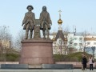
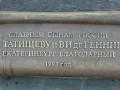

 Памятник отцам-основателям г. Екатеринбурга —
В. Н. Татищеву и В. И. де Геннину — установлен в самом центре уральской столицы на площади Труда. Место было выбрано не случайно — напротив разбит Исторический сквер, где находится старая водонапорная башня и плотина через реку Исеть, решение о строительстве которой в 1721 году было принято В. Татищевым.
Фигуры памятника смотрят в сторону Верх-Исетского завода — оттуда всё началось. Петр I поручил своему сподвижнику, Вильгельму де Геннину, большому мастеру горнозаводских дел, и Василию Татищеву построить на Урале завод для производства стали и чугуна. Завод был возведён, а вместе с ним — и город… Особенно славилось своим качеством верх-исетское кровельное железо, маркированное «А. Я.-Сибирь» и клеймом соболя. Доподлинно известно, что даже в Европе крыши домов крыли железом, изготовленным уральскими заводчанами.
 Автором памятника выступил московский скульптор Пётр Чусовитин. Постамент и скульптуры были отлиты из бронзы в литейном цехе завода «Уралмаш» и до сборки состояли из 19 частей. Установлена монументальная группа 14 августа 1998 г. и приурочена к 275-летию г. Екатеринбурга. На бронзовом картуше у подножия памятника можно прочесть: «Славным сынам России В. Н. Татищеву и В. И. де Геннину. Екатеринбург благодарный. 1998 год».
Скульптурам Татищева и де Геннина молодёжь дала эпатажное название
Бивис и Баттхед. Возможно, это связано с тем, что в одно время с появлением памятника в Россию приходит канал MTV, на котором пользовался популярностью одноимённый мультипликационный сериал, где тоже два героя.
P.S.
Историки говорят, что в жизни Татищев и де Геннин недолюбливали друг друга… Да и отношение Бивиса и Баттхеда друг к другу вряд ли можно назвать дружелюбным.
Если Вам есть, что добавить, или Вы с чем-то не согласны, обязательно напишите об этом в комментариях. Это позволит сделать статью более точной и содержательной.
 Улица Ленина ― от Газетного переулка до улицы Свободы ― самое озеленённое место города, так как по обеим её сторонам разбиты два сквера ― Верхний городской сад и Нижний городской сад.В конце XIX века на месте Верхнего городского сада находилась усадьба, п ...
Улица Ленина ― от Газетного переулка до улицы Свободы ― самое озеленённое место города, так как по обеим её сторонам разбиты два сквера ― Верхний городской сад и Нижний городской сад.В конце XIX века на месте Верхнего городского сада находилась усадьба, п ...


{kind=link}
{kind=link}
{kind=link}